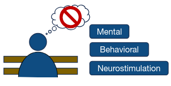
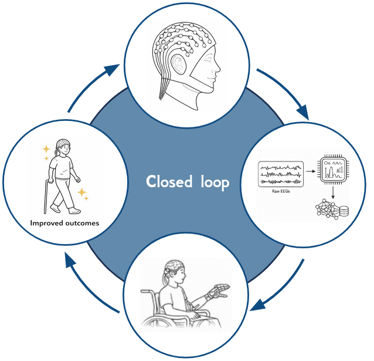
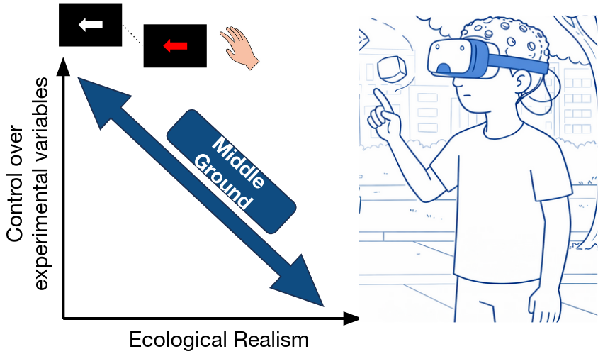
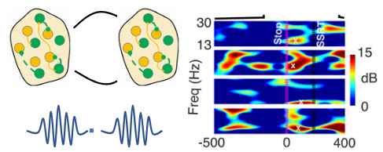
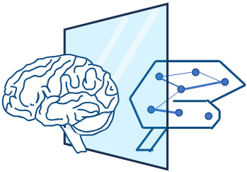

Welcome to Murali Lab
of Cognitive and Computational Neuroscience

Research Areas

Strategies of Control
Investigating the neural mechanisms governing how we suppress unwanted actions and thoughts to maintain goal-directed behavior.

BCI & Motor Control
Decoding motor intentions to develop brain-computer interfaces that assist in rehabilitation and restore control over movement.

Ecologically Valid Neuroscience
Moving beyond the lab to study brain function in real-world settings, capturing how neural circuits operate during natural behaviors.

Functional Role of Neural Oscillations
Examining the functional significance of transient brain rhythms and "bursts" in coordinating motor control and cognitive processes.

Neuro-Inspired AI
Merging neuroscience principles with artificial intelligence to model brain function and develop biologically inspired computational architectures.
Recent Updates
Archive →Loading news feed...